У HTML5 для структури коду введено кілька нових тегів: <article>, <aside>, <footer>, <header>, <nav>, які в деяких випадках замінюють звичний <div>. Хоча здається, що особливої різниці між тегами <div class="header"> і <header> немає, між ними лежить величезна прірва. Теги орієнтовані не так на людей, яким немає сенсу заглядати у вихідний код сторінки, але в машини, інтерпретують код. Машини або роботи не розуміють, для них це типовий тег розмітки - заміни його на і сенс не зміниться. Інша справа, робот, виявивши цей тег, сприймає його саме як шапку сайту або розділу.
Що це дає у результаті? Пошукові системи починають краще індексувати сайт, оскільки чітко відокремлюють контент сторінки від допоміжних елементів. Мовні браузери, призначені для сліпих людей, пропускають заголовок та переходять безпосередньо до вмісту. Сайти можуть автоматично обмінюватись контентом та іншою інформацією між собою. Всі ці можливості називаються семантикою і дозволяють подати дані у зручному для роботів вигляді.
Давайте спочатку зробимо шапку сайту за допомогою тега <header> (приклад).
Приклад використання тегу header
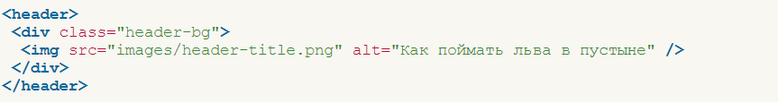Спроба додати в стилях фон до тега <header> ні до чого не призвела, фон в деяких браузерах не бажає відображатися. Усі нові теги слід зробити спочатку блоковими через властивість display, тоді почнуть коректно виводитися (приклад).
Приклад додавання стилів тегу header
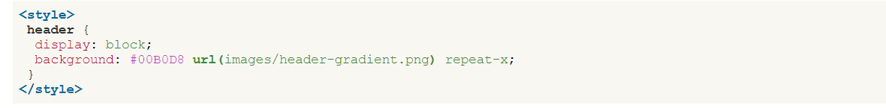Даний приклад буде працювати у всіх браузерах, крім IE7 та IE8. Internet Explorer не додає стиль до елементів, які не розуміється. Це непорозуміння можна виправити, якщо створити фіктивний елемент за допомогою JavaScript. Для цього включимо <head> такий код.
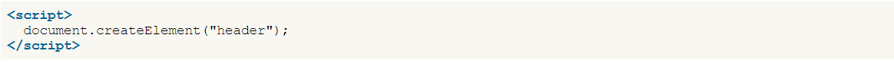Якщо на сторінці є один тег, цей скрипт цілком підійде для роботи. Але не хочеться повторювати рядок десять разів для десяти різних тегів, тому автоматизуємо цей процес через цикл. Самі теги вказуються списком, розділяючись комою (Приклад).
Приклад додавання тегів через цикл в JS
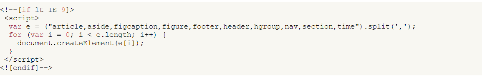Сам скрипт полягає в умовних коментарях, щоб виконувався тільки для IE версії 8.0 і нижче. У IE9 підтримка нових тегів HTML5 вже включена.
Приклад вище не обов'язково вставляти до себе на сайт, можна скористатися загальнодоступним скриптом написаним Ремі Шарпом і MIT, що розповсюджується за ліцензією. Для цього достатньо вказати на нього посилання, як показано на прикладі.
Скрипт для IE
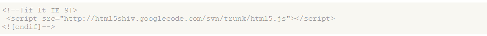Усі зазначені скрипти повинні розташовуватись у коді перед CSS.
Таким чином, для повноцінного використання тегів HTML5 у всіх браузерах достатньо виконати три умови:
- встановити доктайп <! DOCTYPE html>;
- увімкнути скрипт з прикладів;
- у стилях для нових тегів встановити display: block.
Тепер розглянемо деякі теги HTML5 докладніше, щоб зрозуміти сферу їх застосування.
<article>
Задає зміст сайту як новини, статті, записи блогу, форуму або ін. У прикладі показано додавання тега <article>.
Приклад використання тега <article>
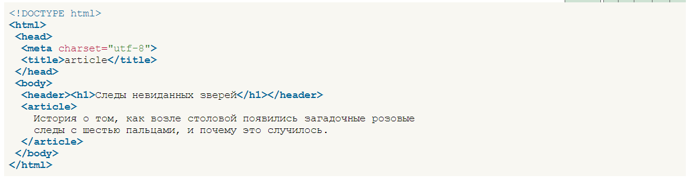<footer>
Задає «підвал» сайту або розділу, в ньому зазвичай міститься ім'я автора, дата документа, контактна та правова інформація (приклад).
Приклад використання тегу <footer>
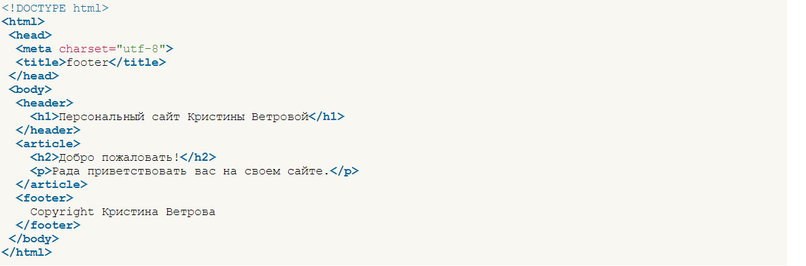<header>
Визначає «шапку» сайту чи розділу.
<nav>
Задаёт навигацию по сайту (пример 6.11). Если на странице несколько блоков ссылок, то в <nav> обычно помещают приоритетные ссылки. Также допустимо использовать несколько тегов <nav> в документе. Запрещается вкладывать <nav> внутрь <address>.
Приклад використання тегу <nav>
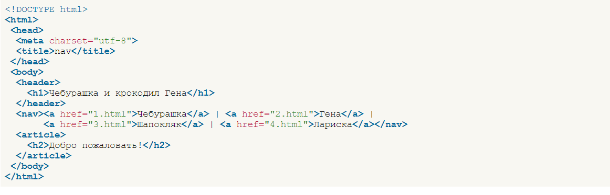<section>
Визначає розділ документа, який може включати заголовки, шапку, підвал і текст (приклад). Дозволяється вкладати один тег <section> всередину іншого.
Приклад використання тегу <section>
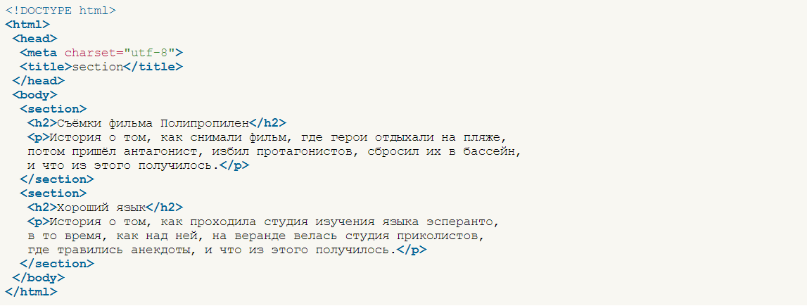<time>
Позначає текст усередині тега <time> як дата, час або одночасно дата та час. Може вказуватись безпосередньо всередині контейнера <time>, або задаватися через атрибут datetime (приклад).
Дата та час задається у міжнародному форматі ISO 8601. Приклади оформлення наведено у табл.
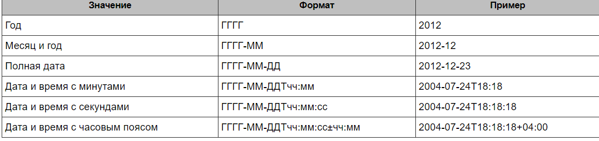Для кожної одиниці існує своя задана форма та обмеження.
- Рік - задається чотирма цифрами (1860).
- Місяць – дві цифри (01 – січень, 02 – лютий, 12 – грудень).
- День – дві цифри від 01 до 31.
- Година – дві цифри від 00 до 23.
- Хвилини – дві цифри від 00 до 59.
- Секунди – дві цифри від 00 до 59.
- Часовий пояс — годинник та хвилина із зазначенням знака плюс або мінус.
Дата і час розділяються між собою великою латинською літерою T. Часовий пояс за необхідності пишеться після часу зі знаком плюс або мінус. Наприклад, для Москви часовий пояс буде +03:00.
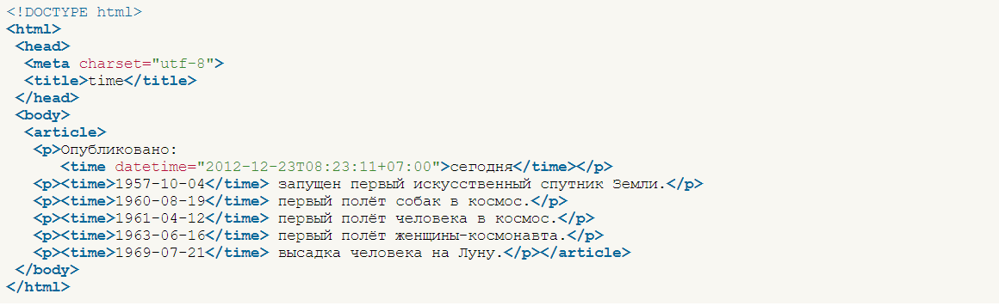